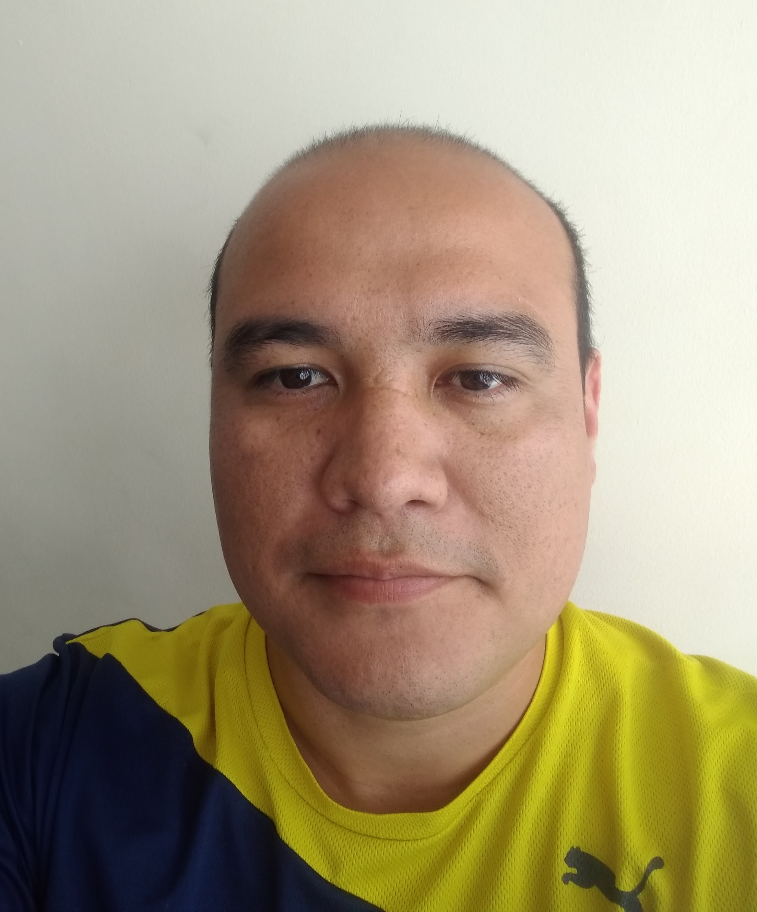

Renny Jose Galindez Fontecha
Soy Renny de Venezuela, ahora vivo en Bogota, con mi hermosa familia tenemos una pequeña mascota que se llama Sally, por muchos años trabajé en un hospital en Caracas, en un campo totalmente diferente a la programación, siempre me ha gustado la informática y cómo nos ayuda a mejorar nuestra vidas.